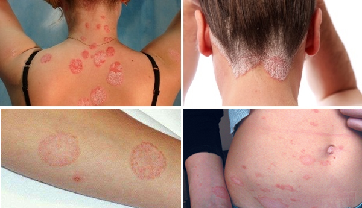
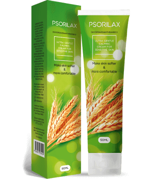

Un articol care a fost citit
de peste 16.730 de utilizatori
de peste 16.730 de utilizatori
Psoriazisul este o boală care afectează întregul organism. Implică intoxicarea sângelui, funcționarea improprie a ficatului, tulburări digestive și un sistem imunitar slăbit. Conform Organizației Mondiale a Sănătății, în prezent, 2-4% din populația planetei suferă de psoriazis. Nu e chiar așa de mult, nu? Dar dacă TU ai fi unul dintre aceștia… Citește mai departe pentru a afla 5 metode de tratare a psoriazisului.
 Psoriazisul nu ocolește pe nimeni. Sunt afectați oameni de toate vârstele, care au aproximativ
aceleași probleme.
Îți este rușine de corpul tău?
Îi faci pe cei apropiați să se simtă
inconfortabil?
Te chinuie senzația de mâncărime?
Îți voi spune despre 5 metode care te pot ajuta.
1. Terapia PUVA (PUVA= Psoralen + Ultraviolete de tip A) este o combinație de radiații cu ultraviolete de tip A și utilizarea sistematică a medicamentelor – fotosensibilizatoare (psoraleni). Înainte de a intra într-o cabină specială echipată cu lămpi UV, pacientul ia o tabletă care conține o substanță din categoria psoralenilor. Psoralenii fac pielea mai sensibilă la razele ultraviolete. Pentru a obține remisiunea, sunt necesare între 10 și 30 de ședințe de terapie. Administrarea orală a psoralenilor cauzează frecvent greață și amețeli. Cu toate acestea, terapia PUVA are niște efecte secundare grave. Având în vedere că razele ultraviolete penetrează lentilele, riscul de cataractă este foarte mare. Mai mult decât atât, în cazul bărbaților, mai multe ședințe de terapie cresc semnificativ riscul apariției cancerului, în special în zona genitală.
2. Terapia BUV – folosește raze ultraviolete de tip B. Întreg corpul sau doar părți ale corpului sunt supuse radiațiilor. Este un echipament special, pentru pacienții care au doar părți mici ale corpului afectate, permițându-le acestora sesiuni de fototerapie acasă și pe cont propriu. Un efect secundar este riscul apariției cancerului.
3. Fototerapia (terapia cu lumină) este utilizată pe scară largă, pentru tratarea psoriazisului incipient sau recidivant, și implică tratamentul cu razele ultraviolete. Acestea suprimă activitatea excesivă a imunității locale și reacțiile inflamatorii ale pielii. Trebuie remarcat faptul că orice fototerapie are efecte secundare, cum ar fi eritemul (înroșirea) și uscăciunea pielii în zona în care se utilizează terapia.
4. Vacanțe pe coasta Mării Moarte, Israel. Este o metodă eficientă. Boala intră în remisiune pentru un timp, variind între o lună și 6 luni. Partea proastă sunt costurile foarte mari. Dacă vrei să faci ceva sănătos și plăcut în același timp și dispui de banii necesari, aceasta este cea mai bună metodă pentru tine.
Îți recomand produsul , care și-a demonstrat eficacitatea prin mii de recenzii pozitive. Acesta funcționează după cum urmează:
Cred că motivul este… natura și minunatele sale daruri, precum ierburi sau fructe, miere, polen, minerale și produse animale. Ce era folosit ca tratament principal cu mulți ani în urmă? „Medicamentele” sus-menționate. Oamenii erau mult mai sănătoși! Își țineau bolile sub control și aveau capacitatea de a se trata fără radiații. Asta nu înseamnă să ne întoarcem la momentul în care se dansa cu tobe în jurul focului, sau la folosirea cenușii în loc de antiseptice. Cu toate acestea, ar fi corect și rațional să folosim darurile naturii.
Este mult mai plăcută opțiunea folosirii unui produs bazat pe componente organice. Să te expui la tratamente cu ultraviolete nu este cea mai bună soluție, în special când există riscul apariției cancerului. Toată lumea își dorește să trateze psoriazisul în cel mai confortabil, eficient și sigur mod.
Există multe teorii în ceea ce privește cauzele apariției psoriazisului, dar oare care dintre ele este cea corectă? De ce nu sunt medicii capabili să dezvolte o medicamentație care să vindece această boală, odată pentru totdeauna? În acest punct, știința și medicina sunt inutile. Singura opțiune este să cauți remediul în natură.
Medicina tradiționalistă recomandă folosirea următoarelor ingrediente în tratarea psoriazisului:
În plus, mai recomandă o dietă sănătoasă, renunțarea la obiceiurile proaste (alcool și fumat), practicarea sportului, a fi calm și rațional. Dacă urmezi aceste sfaturi simple, efectele tratamentelor vor fi miraculoase. Vei avea o viață nouă și multe oportunități noi!
Pe baza leacurilor băbești a fost elaborat un produs revoluționar anti-psoriazis, care conține 100% componente organice, colectate din zonele sălbatice. Spre deosebire de medicamentele vândute în farmacii, care conțin doar o cantitate mică din ingredientul activ, ingredientele naturale din acest produs sunt prezente în concentrații mari.
Chiar dacă sunt specialist în medicina tradițională, sunt incapabil să pregătesc un decoct, unguent sau o infuzie, astfel încât să-și păstreze eficacitatea și „prospețimea” ingredientelor active. Ceva se va pierde inevitabil în timpul tratamentului termic, infuzării sau uscării. Dar toate acestea se pot obține într-un laborator creat special în scopuri industriale. În cadrul său, ingredientele active vor fi conservate și îmbunătățite. Drept urmare, nu prepar niciodată acest produs anti-psoriazis de unul singur. Recomand produsul tuturor pacienților mei. Este complet organic, eficient, și nu provoacă reacții alergice.
Produsul conține:
1. AVENANTHRAMIDE D
2. UNT DE SHEA
3. PANTHENOL
4. ULEI DE RAPTȚǍ
5. CEARǍ DE CANDELILLA
1. AVENANTHRAMIDE D
2. UNT DE SHEA
3. PANTHENOL
4. ULEI DE RAPTȚǍ
5. CEARǍ DE CANDELILLA
Produsul este foarte simplu de aplicat. Se încălzește de la căldura corpului tău, doar aplică o cantitate mică pe zonele afectate. Nicio dificultate în ceea ce privește utilizarea! Poți aplica singur produsul. Fără senzații neplăcute sau pete de grăsime. Te bucuri în permanență de simplitatea utilizării și de efectele rapide.
Un motiv în plus pentru care acest produs este mai bun decât unguentele făcute în casă ar fi că este dificil să obții ingrediente proaspete și de calitate (mai ales în oraș). Mai mult decât atât, acestea pot fi costisitoare. Produsul preparat este mai puțin costisitor, iar în prezent este vândut cu o reducere de 50%. Ofertele speciale sunt frecvente și poți obține o ofertă bună.
Calitatea, siguranța și eficacitatea acestui produs sunt dovedite. Trebuie doar să îl cumperi și să îl folosești conform instrucțiunilor. Toți pacienții mei au obținut rezultatul dorit și nu am auzit despre nicio experiență nereușită în tratamentul împotriva psoriazisului.
Compania de la care am cumpărat produsul oferă, de asemenea, serviciu de asistență clienți. Puteți pune toate întrebările prin telefon. Pacienții mei sunt recunoscători pentru ajutorul meu, iar eu sunt fericit că oamenii se recuperează. Menținerea tuturor pacienților mei sănătoși este sarcina mea principală.
Dragi abonați! Ne-ar face mare plăcere să luați parte la un sondaj, care să ne ajute să înțelegem ce alte metode ați folosit în tratarea psoriazisului și ce ați recomanda altor oameni.
Ce ați folosit și ce v-a ajutat în tratarea psoriazisului?
Sondaj anonim
Au votat 3894 (de) persoane
Ți-a plăcut acest articol? Distribuie-l și prietenilor! Mulțumim! :)
Comentarii la articol:
Te rugăm, fără limbaj vulgar sau spamuri!
Diana
Sunt îngrozită la gândul că fiica mea deja suferă de psoriazis! Eu l-am avut când aveam 42 de ani, iar ea are doar 12 ani. Vreau să comand atât pentru ea, cât și pentru mine. Sper din tot sufletul că voi reuși să țin sub control această boală. Vă mulțumesc foarte mult pentru articol, este o adevărată speranță pentru noi.
Emilia
Nu este de mirare, având în vedere că mâncăm tot ceea ce ne dorim, fiind de fapt în aceeași măsură, vina noastră. Este bine că ești o mamă inteligentă și nu intenționezi să tratezi copilul cu ajutorul unor substanțe chimice. Am încercat deja acest produs și am scăpat de 2 noduli. Îmi țin sub control psoriazisul de un an și jumătate și nu am avut vreo recidivă. Vă recomand cu toată încrederea să comandați produsul .
Eliza
Și medicul meu a lăudat acest produs, în ciuda faptului că el este împotriva leacurilor băbești. Dar acest produs conține numai componente organice și este fabricat de un producător de renume. Medicul meu l-a folosit pentru a trata cu succes zeci de pacienți de-ai săi. Mi l-a prescris și mie și l-am folosit timp de o lună. Pot să spun că nu simt nicio durere, iar psoriazisul a început să se amelioreze.
Invitat
Din păcate, nimeni nu mi-a spus despre acest produs atunci când am avut nevoie. Nu era disponibil și atunci? Am folosit diferite metode, precum psihoterapie sau consumul de infuzii pe bază de plante. Nu vreau să ajung iar acolo, așa că plănuiesc să folosesc acest produs.
Invitat
Am suferit de psoriazis timp de 7 ani și am făcut probabil totul, pentru a-l trata! Am comandat produsul , iar după doar 2 săptămâni, m-am simțit mai bine. Vreau să îl folosesc din nou, pentru a evita în viitor vizita la medici, m-am săturat! Toate metodele terapeutice doar au înrăutățit lucrurile. M-am simțit puțin mai bine atunci când am folosit o loțiune cu muguri de mesteacăn și oțet de mere. Acum plănuiesc să termin tratamentul și să mă fac bine.
Statistici site
| Vizitatori azi: | (de) persoane |
| Momentan pe site: | (de) persoane |
| Au comandat : | (de) persoane |